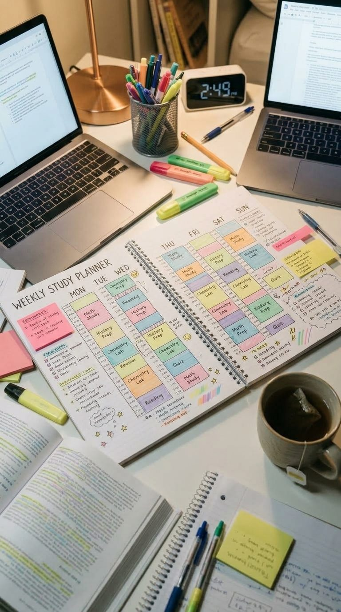

Why Cramming the Night Before Fails (and What to Do Instead)
You know the night. The exam is tomorrow, the tea has gone cold, and you are trying to fit three weeks of syllabus into six hours. You wake up feeling like you know everything. A month later, it is gone.
That is not because you are lazy or not smart. It is simply how memory works. And the good news is that a small change in when you study, not how much, can make a big difference.
Cramming feels like it works, but it does not last
When you read the same page again and again, it starts to look familiar. And familiar feels like "I know this." But recognising something is very different from remembering it on your own, with the page closed.
Researchers have studied this for more than a hundred years, in over 200 studies. The result is always the same: several short sessions spread over time build better long-term memory than one big session of the same length. Same hours, better result. Only the spacing changes.
Same hours. Better result. Only the spacing changes.

Six habits that make a schedule work
1. Study a little, often. Forty minutes a day for ten days beats one giant night. Even 20 minutes counts. The goal is to show up every day, not to be perfect.
2. Come back to old topics. Revise today's chapter tomorrow, then after three days, then after a week. If you forgot a lot, bring the next review closer. This is called spaced repetition, and it is the single most useful trick in this article.
3. Test yourself, do not just re-read. Close the book and write down what you remember. Then check. It feels harder than reading, and that is exactly why it works. Even five questions at the end of a session are enough.
4. Treat sleep as part of studying. Studies suggest that sleep helps the brain lock in what you learned, especially longer and more complex material. Staying awake all night can quietly work against you.
5. Take real breaks. You may have heard of the 25 minutes of study and 5 minutes of rest method. To be honest, very few experiments have tested it on students, so do not treat it as magic. What does seem to help is resting properly. A short walk or a few quiet minutes is better than scrolling your phone.
6. Keep the plan small. A plan you can follow for a month is worth more than a perfect one you quit in three days.
A sample week for a Class 9 or 10 student
Here is a simple example with two 40-minute sessions a day and a 10-minute break in between. Change the subjects to fit your own timetable.
| Day | Session 1 | Session 2 |
|---|---|---|
| Mon | Chemistry | Maths |
| Tue | History | English |
| Wed | Maths | Chemistry (revise Monday) |
| Thu | Social Studies | History (revise Tuesday) |
| Fri | English | Maths practice |
| Sat | Weak topics | Mixed quiz |
| Sun | Light revision | Rest and plan next week |
Notice that every subject comes back within two or three days. That is the spacing at work. Saturday is for the topics that felt hard, and Sunday is deliberately light, so you do not burn out.
Two weeks before the exam
When exams are close, the plan changes a little.
- Days 14 to 8: Finish any chapters you have not covered. Make short notes or flashcards as you go.
- Days 7 to 3: Stop reading new material. Solve past papers and time yourself, then mark your own mistakes.
- Days 2 to 1: Revise only your notes and your mistake list. Sleep early. A rested brain remembers more than a tired one.
Mistakes almost everyone makes
- Studying one subject for four hours. Your focus drops after a while. Switching subjects keeps your mind awake.
- Highlighting everything. If the whole page is yellow, nothing stands out. Highlight less, and write short notes in your own words instead.
- Studying only what you already like. It feels good, but the marks are lost in the weak topics. Start with those.
- Keeping the phone next to you. Even a silent phone pulls your attention. Put it in another room during sessions.
- Making a timetable so full it cannot be followed. Leave gaps for surprises. Life will always have them.
How to start today
Do not wait for Monday or for a new notebook. Pick one subject you have been avoiding and set a timer for 20 minutes. When it rings, close the book and write down three things you remember, without peeking. That is your first spaced session done.
Tomorrow, do the same thing again, and start by writing what you remember from yesterday. Then add a second subject. After one week you will have a rhythm, and after two you will feel the difference. Small and steady wins, every time.
A note for parents
If your child studies for six hours the night before and still forgets everything, please do not be too hard on them. It is not laziness. Help them build the small daily habit instead. Ask them to explain a topic to you in simple words, because if they can teach it, they know it. And make sure they get proper sleep, especially in exam week.
Then cram. It is still better than doing nothing. Just do not make it your plan every time.
Want a ready-made plan?
Download our printable weekly study planner and start today.
Get the plannerWant more study tips and free planners? Subscribe here.